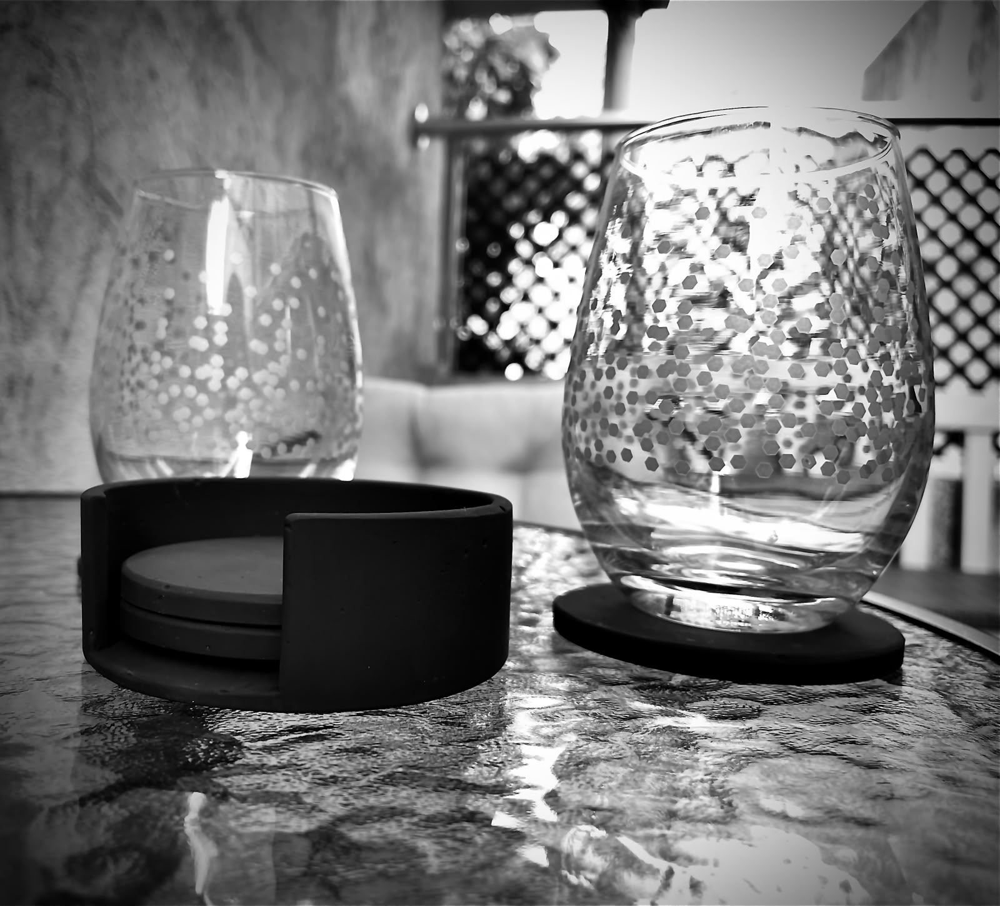
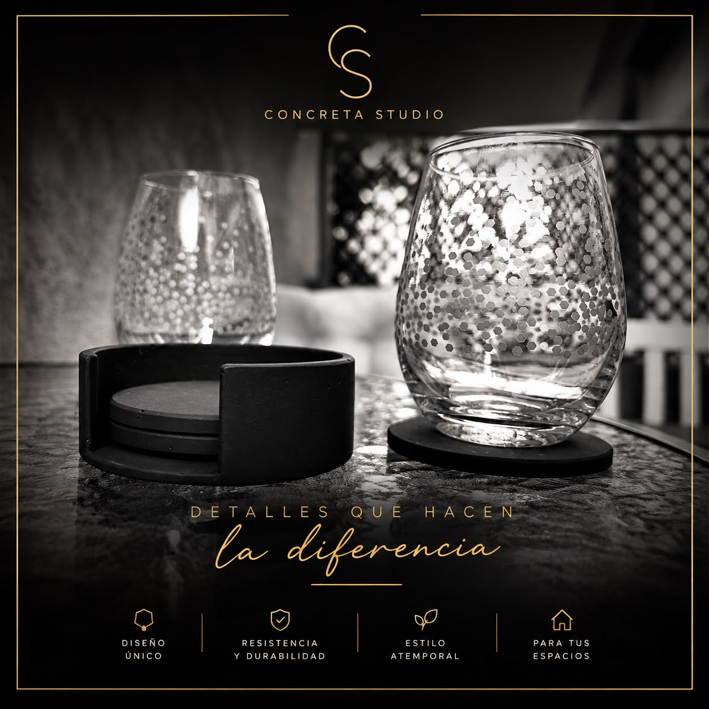
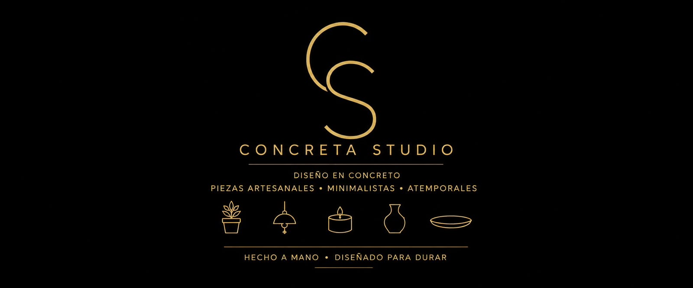
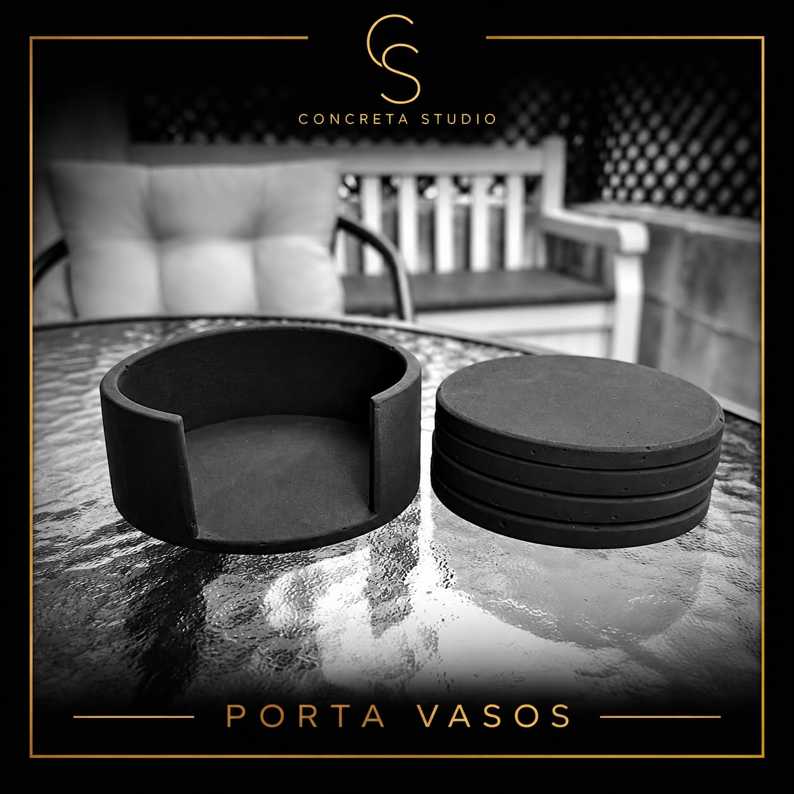

Piezas artesanales, minimalistas y atemporales para tus espacios.
Cada pieza nace de una mezcla cuidadosa de cemento y diseño deliberado. No producimos en serie — moldeamos a mano objetos que transforman los rincones cotidianos en algo memorable.
Ver colección
Concreta Studio nace de la convicción de que los objetos del día a día merecen ser bellos. Trabajamos el cemento con las manos para crear piezas que no siguen tendencias — las trascienden.
Cada molde, cada textura, cada acabado refleja horas de trabajo artesanal. El resultado: objetos con carácter propio que elevan cualquier espacio donde residan.
Cada pieza tiene una forma pensada, no elegida por catálogo.
El cemento envejece con dignidad. No se astilla, no se borra.
Un objeto que no está sujeto a temporadas ni modas pasajeras.
Diseñadas para vivir en sala, escritorio, entrada o terraza.



Protege tus superficies, eleva tus momentos.
Un set de seis discos con soporte, moldeados en cemento pigmentado negro. Su peso y textura comunican solidez; su forma circular y acabado mate hablan de simplicidad llevada al extremo correcto.